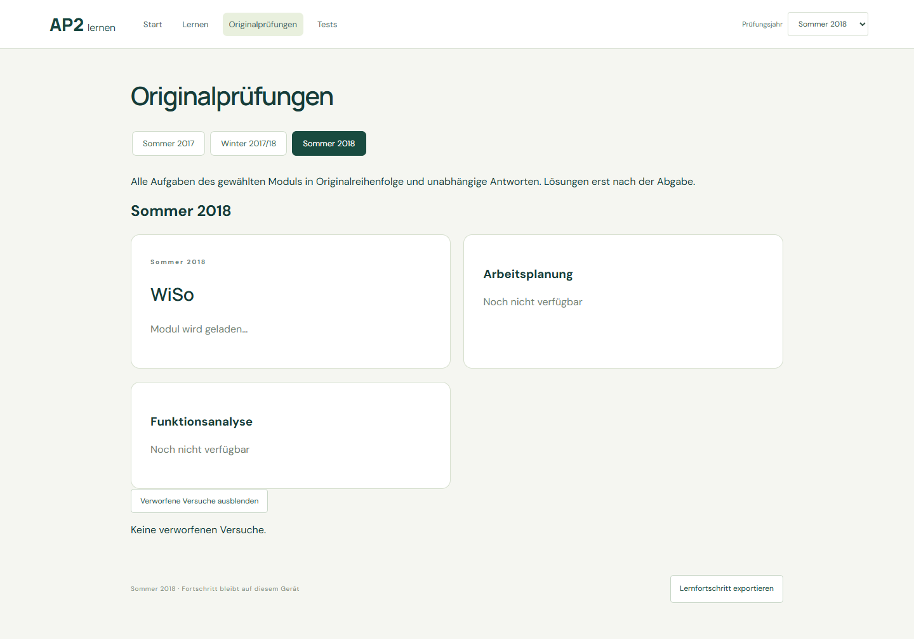
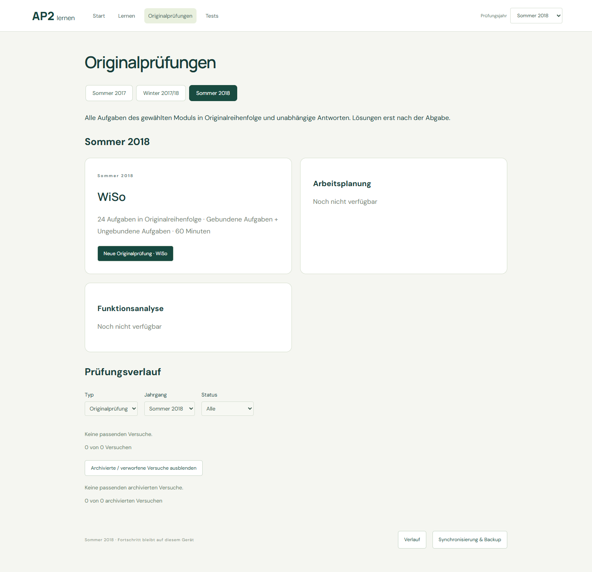
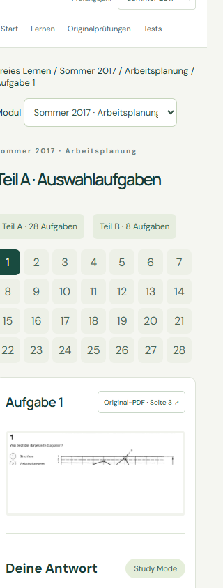
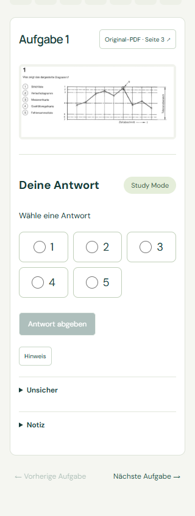
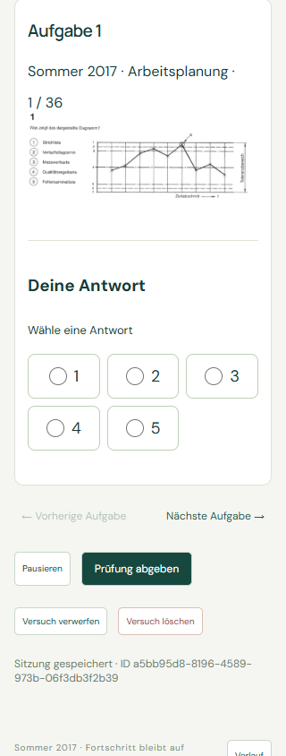
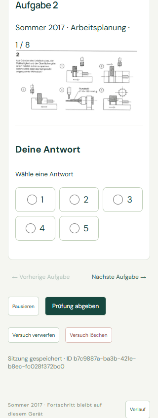
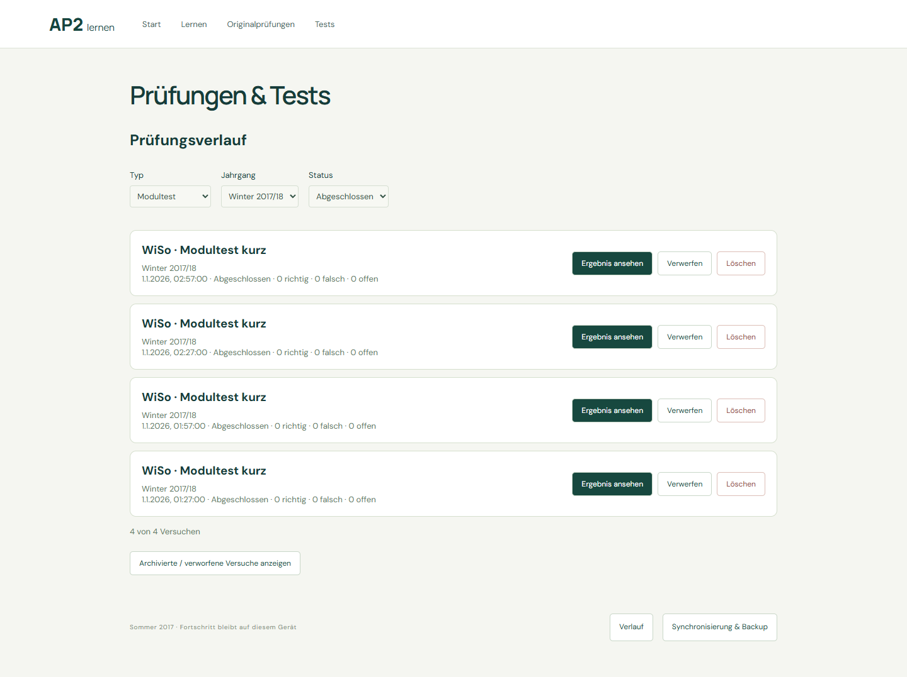
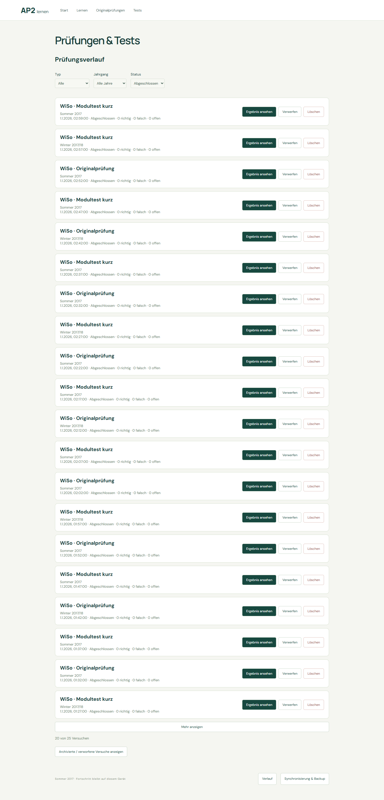
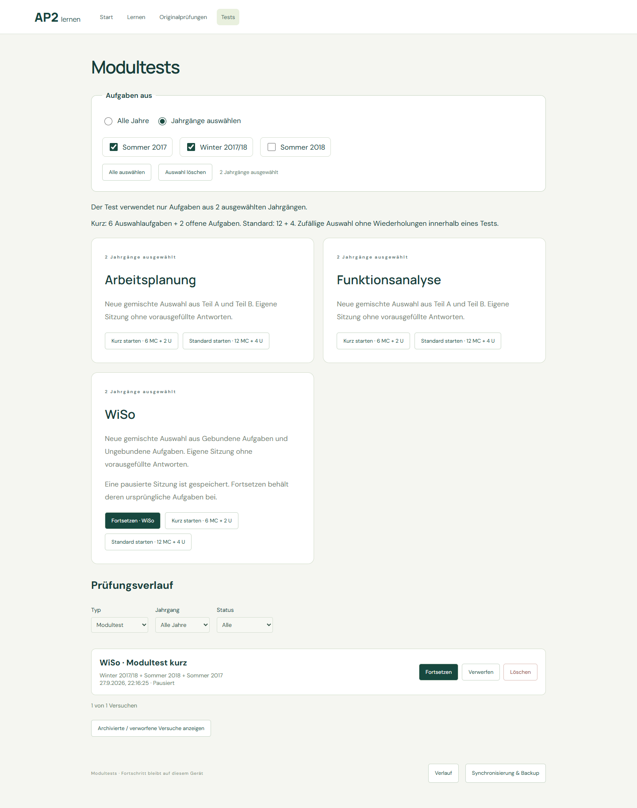
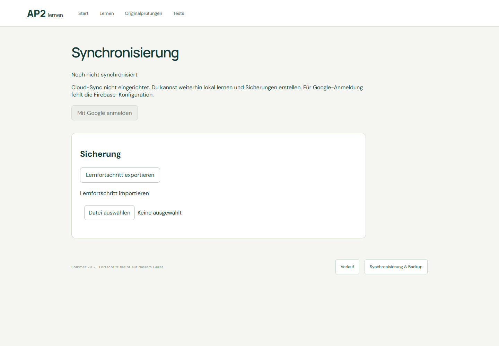

所有浏览器截图使用隔离环境和合成个人记录；不包含用户真实进度。Firebase 尚未配置，未验证真实 Google 登录或双设备云同步。
自动化浏览器验收结果 · 本地 Firestore 模拟器结果 · 题库不变校验 · Firebase 配置步骤






合成 120 条记录。初始 20 条，每次增加 20；归档默认折叠。恢复按 previous_status，删除后仅目标测试消失。


全部、单年份和多年份均校验 source_mix；改变筛选不更改已创建测试。


仅本地实现及测试；等待 Firebase 项目公开 Web 配置后，再做 Windows ↔ Android/iPad 实机验收。